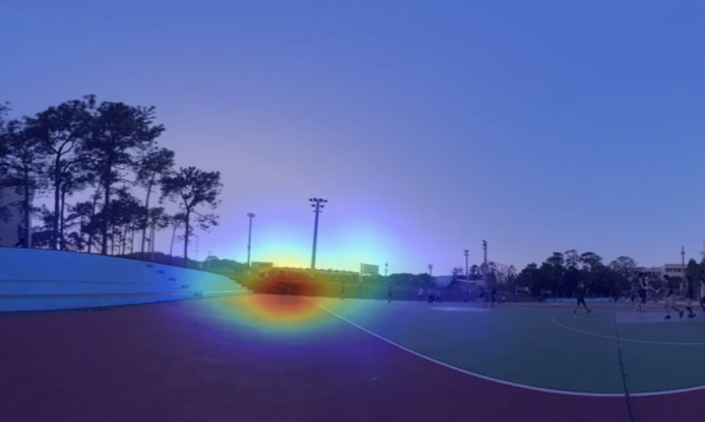

Challenge on Visual Attention Estimation in HMD 2023
To improve the experience of XR applications, techniques of visual attention estimation have been developed for predicting human intention so that the HMD can pre-render the visual content to reduce rendering latency. However, most deep learning-based algorithms have to pay heavy computation to achieve satisfactory accuracy. This is especially challenging for embedded systems with finite resources such as computing power and memory bandwidth (e.g., standalone HMD). In addition, this research field relies on richer data to advance the most cutting-edge progress, while the number and diversity of existing datasets were still lacking. In this challenge, we collected a set of 360° MR/VR videos along with the information of user head pose and eye gaze signals. The goal of this competition is to encourage contestants to design lightweight visual attention estimation models that can be deployed on an embedded device of constrained resources. The developed models need to not only achieve high fidelity but also show good performance on the device.

Organizer:
Min-Chun Hu, National Tsing Hua University
Tse-Yu Pan, Natonal Tawian University of Science and Technology
Herman Prawiro, National Tsing Hua University
CM Cheng, MediaTek
Hsien-kai Kuo, MediaTek